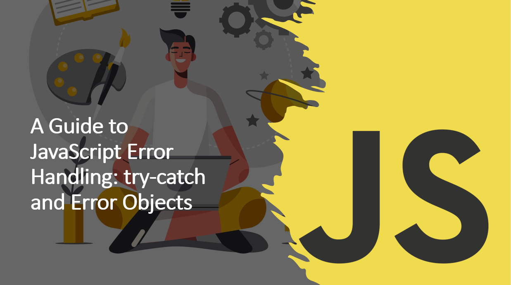

Introduction
Error handling is a crucial aspect of writing robust and reliable JavaScript code. Unexpected errors can occur during the execution of a program, and proper error handling ensures that these errors are caught, identified, and gracefully handled.
In this guide, we will explore JavaScript error handling using the try-catch statement and the Error object.
Understanding error handling will help you build more resilient and user-friendly apps.
Suggested Tutorials 📑:
Let's start explore the basics of error handling in JavaScript.
What is Error Handling?
Error handling is the process of identifying, catching, and responding to errors in a program.
JavaScript provides several mechanisms for handling errors, including the try-catch statement and the Error object.
The try-catch statement allows you to attempt a block of code and catch any errors that might occur during its execution. The try block contains the code that you want to test, and the catch block handles any errors that arise.
The catch block is only executed if an error occurs in the try block.
The following syntax illustrates the try-catch statement:
try {
} catch (error) {
}
In this example:
- The
try block contains the code that you want to test. - The
catch block is executed if an error occurs in the try block. - The
error parameter is the error object that contains information about the error.
2. The Error Object
When an error occurs, JavaScript automatically creates an Error object that contains information about the error, such as the error message and the stack trace. The catch block receives this Error object as its parameter, allowing you to access and process error details.
The following example illustrates the Error object:
try {
} catch (error) {
console.log(error.message);
console.log(error.stack);
}
In this example:
- The
error.message property contains the error message. - The
error.stack property contains the stack trace.
Suggested Tutorials 📑:
3. Custom Errors
JavaScript also allows you to create custom errors using the Error object. You can use custom errors to provide more information about the error and to distinguish between different types of errors.
The following example illustrates how to create a custom error:
class CustomError extends Error {
constructor(message) {
super(message);
this.name = 'CustomError';
}
}
try {
throw new CustomError('This is a custom error message.');
} catch (error) {
console.error(error.name);
console.error(error.message);
}
In this example:
- we created a custom error by extending the
Error object. The CustomError class inherits the Error class and adds a custom error name. - We then threw an instance of the
CustomError class in the try block and caught it in the catch block.
4. The finally Block
The finally block is executed regardless of whether an error occurs in the try block.
finally block is useful for performing cleanup tasks, such as closing database connections or releasing resources.
The following example illustrates the finally block:
try {
} catch (error) {
} finally {
}
In this example:
- The
try block contains the code that may cause an error. - The
catch block handles the error. - The
finally block contains the code that always executes.
Suggested Tutorials 📑:
5. The throw Statement
The throw statement allows you to throw an error. You can throw any value, but it is recommended to throw an instance of the Error object.
The following example illustrates the throw statement:
try {
throw new Error('This is an error message.');
} catch (error) {
console.error(error.message);
}
In this example:
- We threw an instance of the
Error object in the try block. - The
catch block caught the error and displayed the error message.
6. Error Types
JavaScript provides several built-in error types, including EvalError, RangeError, ReferenceError, SyntaxError, TypeError, and URIError. Each error type has its own error message and properties.
6.1. EvalError
The EvalError error occurs when the eval() function is used incorrectly. The EvalError error is not used in modern JavaScript, and it is only included for compatibility with older browsers.
As an example:
try {
eval('alert("Hello World")');
} catch (error) {
console.error(error.message);
}
6.2. RangeError
The RangeError error occurs when a value is not in the expected range. For example, the RangeError error occurs when you use the Number.toExponential() method with a value that is out of range.
As an example:
try {
const number = 1.23456789;
number.toExponential(-1);
} catch (error) {
console.error(error.message);
}
6.3. ReferenceError
The ReferenceError error occurs when you use a variable that is not defined. For example, the ReferenceError error occurs when you use a variable that is not declared.
As an example:
try {
console.log(x);
} catch (error) {
console.error(error.message);
}
6.4. SyntaxError
The SyntaxError error occurs when you use invalid syntax. For example, the SyntaxError error occurs when you use an invalid regular expression.
As an example:
try {
const regex = new RegExp('\\');
} catch (error) {
console.error(error.message);
}
6.5. TypeError
The TypeError error occurs when you use a value of the wrong type. For example, the TypeError error occurs when you use a string method on a number.
As an example:
try {
const number = 123;
number.toUpperCase();
} catch (error) {
console.error(error.message);
}
6.6. URIError
The URIError error occurs when you use invalid URI syntax. For example, the URIError error occurs when you use an invalid URI.
As an example:
try {
decodeURI('%');
} catch (error) {
console.error(error.message);
}
Conclusion
In this article, we have learned about JavaScript error handling. We have also learned about the try...catch statement, the Error object, custom errors, the finally block, the throw statement, and error types and their use cases.
Suggested Tutorials 📑:
We hope you found this article helpful.
Happy coding! 😇